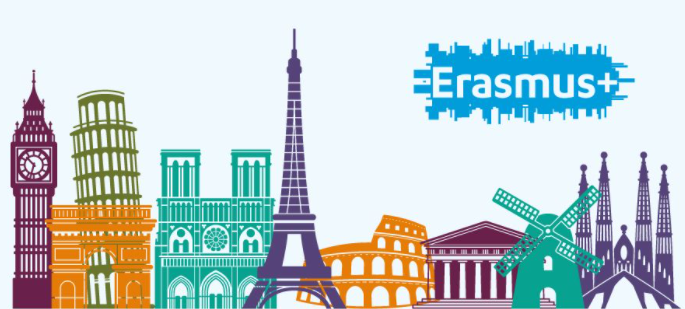

Erasmus+ es un programa de la Unión Europea (UE) que apoya la educación, la formación, la juventud y el deporte en Europa. Lanzado en 2014.
Movilidad de estudiantes y personal:
Los estudiantes pueden estudiar o hacer prácticas en el extranjero, mientras que los profesores, formadores y otro personal pueden trabajar.
Intercambios juveniles y voluntariado:
Los jóvenes pueden participar en intercambios, programas de voluntariado y colaboraciones relacionadas con la juventud.
Desarrollo deportivo:
Erasmus+ apoya proyectos que promueven la actividad física y abordan desafíos en el deporte, como la inclusión y la igualdad.
Erasmus+ refuerza y promueve:
la dimensión europea de la enseñanza y el aprendizaje
valores como la integración y la diversidad, la tolerancia y la participación democrática
el aprendizaje digital
la sostenibilidad ecológica y el comportamiento respetuoso con el medio ambiente
el conocimiento del patrimonio común europeo y su diversidad
el desarrollo de redes profesionales en toda Europa
